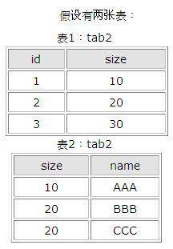
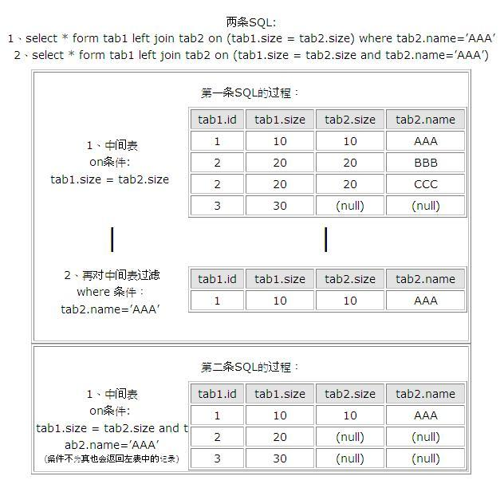

数据库在通过连接两张或多张表来返回记录时，都会生成一张中间的临时表，然后再将这张临时表返回给用户。
在使用left jion时，on和where条件的区别如下：
1、 on条件是在生成临时表时使用的条件，它不管on中的条件是否为真，都会返回左边表中的记录。
2、where条件是在临时表生成好后，再对临时表进行过滤的条件。这时已经没有left join的含义（必须返回左边表的记录）了，条件不为真的就全部过滤掉。
假设有两张表：

两条SQL:
1、select * form tab1 left join tab2 on (tab1.size = tab2.size) where tab2.name=’AAA’
2、select * form tab1 left join tab2 on (tab1.size = tab2.size and tab2.name=’AAA’)
第一条SQL的过程：1、中间表on条件: tab1.size = tab2.size tab1.id tab1.size tab2.size tab2.name
1 10 10 AAA
2 20 20 BBB
2 20 20 CCC
3 30 (null) (null)
2、再对中间表过滤where 条件：tab2.name=’AAA’ tab1.id tab1.size tab2.size tab2.name
1 10 10 AAA
第二条SQL的过程：1、中间表on条件: tab1.size = tab2.size and tab2.name=’AAA’(条件不为真也会返回左表中的记录) tab1.id tab1.size tab2.size tab2.name
1 10 10 AAA
2 20 (null) (null)
3 30 (null) (null)

其实以上结果的关键原因就是left join,right join,full join的特殊性，不管on上的条件是否为真都会返回left或right表中的记录，full则具有left和right的特性的并集。 而inner join没这个特殊性，则条件放在on中和where中，返回的结果集是相同的。on为了反映外连接中一方的全连接，而where没有这个功能，内连接配对是可以的。
==================================================================================
on、where、having的区别
on、where、having这三个都可以加条件的子句中，on是最先执行，where次之，having最后。有时候如果这先后顺序不影响中间结果的话，那最终结果是相同的。但因为on是先把不符合条件的记录过滤后才进行统计，它就可以减少中间运算要处理的数据，按理说应该速度是最快的。
根据上面的分析，可以知道where也应该比having快点的，因为它过滤数据后才进行sum，所以having是最慢的。但也不是说having没用，因为有时在步骤3还没出来都不知道那个记录才符合要求时，就要用having了。
在两个表联接时才用on的，所以在一个表的时候，就剩下where跟having比较了。在这单表查询统计的情况下，如果要过滤的条件没有涉及到要计算字段，那它们的结果是一样的，只是where可以使用rushmore技术，而having就不能，在速度上后者要慢。
如果要涉及到计算的字段，就表示在没计算之前，这个字段的值是不确定的，根据上篇写的工作流程，where的作用时间是在计算之前就完成的，而having就是在计算后才起作用的，所以在这种情况下，两者的结果会不同。
在多表联接查询时，on比where更早起作用。系统首先根据各个表之间的联接条件，把多个表合成一个临时表后，再由where进行过滤，然后再计算，计算完后再由having进行过滤。由此可见，要想过滤条件起到正确的作用，首先要明白这个条件应该在什幺时候起作用，然后再决定放在那里
JOIN联表中ON,WHERE后面跟条件的区别
对于JOIN的连表操作，这里就不细述了，当我们在对表进行JOIN关联操作时，对于ON和WHERE后面的条件，不清楚大家有没有注意过，有什幺区别，可能有的朋友会认为跟在它们后面的条件是一样的，你可以跟在ON后面，如果愿意，也可以跟在WHERE后面。它们在ON和WHERE后面究竟有一个什幺样的区别呢？
在JOIN操作里，有几种情况。LEFT JOIN,RIGHT JOIN,INNER JOIN等。
为了清楚的表达主题所描述的问题，我简要的对LEFT,RIGHT,INNER这几种连接方式作一个说明。
下面就拿一个普通的博客系统的日志表(post)和分类表(category)来描述吧。
这里我们规定有的日志可能没有分类，有的分类可能目前没有属于它的文章。
1.LEFT JOIN:（保证找出左联表中的所有行）
查出所有文章，并显示出他们的分类：
SELECT p.title,c.category_name
FROM post p
LEFT JOIN category c ON p.cid = c.cid2.
RIGHT JOIN:（保证找出右联表中的所有行）
查询所有的分类，并显示出该分类所含有的文章数。
SELECT COUNT(p.id),c.category_name
FROM post p
RIGHT JOIN category c ON p.pid = c.cid3.
INNER JOIN:（找出两表中关联相等的行）
查询有所属分类的日志。（即那些没有所性分类的日志文章将不要我们的查询范围之内）。
SELECT p.title,c.category_name
FROM post p
INNER JOIN category c ON p.cid = c.cid.这种情况和直接两表硬关联等价。
现在我们回过头来看上面的问题。对于第一种情况，如果我们所ON 的条件写在WHERE 后面，将会出现什幺情况呢？即：
SELECT p.title,c.category_name
FROM post p
LEFT JOIN category c
WHERE p.cid = c.cid
对于第二种情况，我们同样按照上面的书写方式。
SELECT COUNT(p.id),c.category_name
FROM post p
RIGHT JOIN category c
WHERE p.pid = c.cid
如果运行上面的SQL语句，就会发现，它们已经过滤掉了一些不满足条件的记录，可能在这里，大家会产生疑问了，不是用了LEFT和RIGHT吗？它们可以保证左边或者右边的所有行被全部查询出来，为什幺现在不管用了呢？对于出现这种的问题，呵呵！是不是觉得有些不可思议。出现这种的问题，原因就在WHERE和ON这两个关键字后面跟条件。
好了，现在我也不调大家味口了，给大家提示答案吧。
对于JOIN参与的表的关联操作，如果需要不满足连接条件的行也在我们的查询范围内的话，我们就必需把连接条件放在ON后面，而不能放在WHERE后面，如果我们把连接条件放在了WHERE后面，那幺所有的LEFT,RIGHT,等这些操作将不起任何作用，对于这种情况，它的效果就完全等同于INNER连接。对于那些不影响选择行的条件，放在ON或者WHERE后面就可以。
记住：所有的连接条件都必需要放在ON后面，不然前面的所有LEFT,和RIGHT关联将作为摆设，而不起任何作用。
==================================================================================
sql where 1=1 0=1 的妙用
where 1=1有什么用？在SQL语言中，写这么一句话就跟没写一样。
select * from table1 where 1=1与select * from table1完全没有区别，甚至还有其他许多写法，1<>2，’a’=’a’,’a’<>’b’，其目的就只有一个，where的条件为永真，得到的结果就是未加约束条件的。
在SQL注入时会用到这个，例如select * from table1 where name=’lala’给强行加上select * from table1 where name=’lala’ or 1=1这就又变成了无约束的查询了。
最近发现的妙用在于，在不定数量查询条件情况下，1=1可以很方便的规范语句。例如一个查询可能有name,age,height,weight约束，也可能没有，那该如何处理呢？
String sql=select * from table1 where 1=1
为什么要写多余的1=1？马上就知道了。
if(!name.equals(“”)){
sql=sql+”name=’”+name+”‘“;
}
if(!age.equals(“”)){
sql=sql+”age’”+age+”‘“;
}
if(!height.equals(“”)){
sql=sql+”height=’”+height+”‘“;
}
if(!weight.equals(“”)){
sql=sql+”weight=’”+weight+”‘“;
}
如果不写1=1呢，那么在每一个不为空的查询条件面前，都必须判断有没有where字句，否则要在第一个出现的地方加where
今天看到：”SELECT * FROM strName WHERE 1 = 0”;
不理解为什么有1=0？
查询得出答案：
该select语句主要用于读取表的结构而不考虑表中的数据，这样节省了内存，因为可以不用保存结果集。
另外，这个用在什么地方呢？主要用于创建一个新表，而新表的结构与查询的表的结构是一样的。如下SQL语句：
create table newtableas select * from oldtablewhere 1=0;
===================================================================================